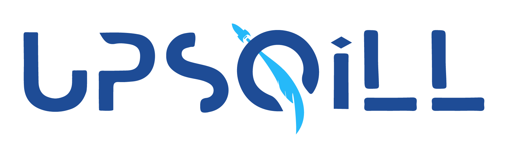
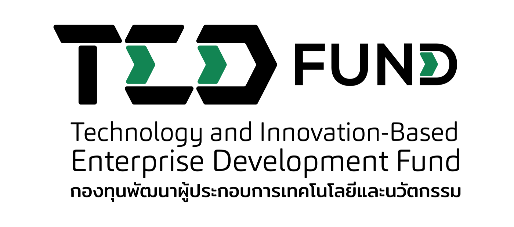

"I don't know which faculty fits me."
Connect interests, strengths, scores, and future goals into clearer university direction.

UpSqill helps Thai high school students discover the right faculty, diagnose their weaknesses, and improve exam performance through personalized learning guidance.
No more studying blindly. No more confusion about what to improve next.
Many students spend hours studying, joining classes, and practicing questions without knowing which skills actually hold them back.
Connect interests, strengths, scores, and future goals into clearer university direction.
See the hidden weak skills that make extra practice feel inefficient.
Replace random review with a priority list based on goal, skill, and score gap.
Give students a calmer, step-by-step path through pressure and uncertainty.
UpSqill connects goals, current ability, skill gaps, and learning plans into one personalized roadmap. Students understand what to improve and how to move closer to their dream faculty.
Strong overall direction. The fastest score lift comes from focused practice on the highest-impact weak skills this week.
UpSqill turns diagnostic results into practical decisions: which skill has the largest score impact, how much effort is needed, and what should happen this week.
The gap is not spread evenly. English inference and chemistry concepts create the fastest route to the next 45 points.
Instead of reviewing every topic equally, the roadmap starts with the upper-right skills that block the most points.
Four focused practice days per week are enough to move mastery when the questions match the right skill.
The next plan should not add harder questions yet. It should train transfer: applying known concepts in unfamiliar exam formats.
UpSqill turns admissions preparation into a guided loop: diagnose, prioritize, practice, and track.
Share dream faculty, target university, current score, strengths, and learning preferences.
Analyze performance to identify skill gaps, weak concepts, readiness, and improvement priorities.
Receive a learning sequence with priority skills, weekly direction, and milestones.
Practice targeted questions and learn from explanations, mistake analysis, and next actions.
Monitor mastery, readiness score, progress trends, and recommended next steps.
Each feature translates performance data into a practical next step students and parents can understand.
Know exactly where you are weak before spending more time studying.
Turn your dream faculty into a clear score and skill roadmap.
Study what matters most for your goal instead of following generic advice.
The more you practice, the smarter your learning path becomes.
Don't just know the answer. Understand why and what to improve next.
See improvement clearly, one skill at a time.
Help your child with clarity, not guesswork, through simple weekly progress insights.
Students move from a dream faculty to exam readiness through diagnosis, roadmap planning, adaptive practice, and progress tracking.
UpSqill gives parents clearer visibility into strengths, weaknesses, progress, and recommended next steps, not only test scores.
See whether your child is truly improving.
Support your child with better direction.
Focus on high-impact improvement areas.
Reduce uncertainty with structured next steps.
UpSqill is focused on measurable learning outcomes, adaptive learning, and a clearer preparation experience for both students and parents.
UpSqill is supported by innovation and entrepreneurial ecosystem partners that help accelerate research, product development, and educational innovation initiatives. Our collaboration network contributes through mentorship, incubation support, workspace facilitation, ecosystem access, and strategic guidance for AI-powered education innovation.

UpSqill is building a personalized education ecosystem: skill diagnosis, adaptive learning, AI coaching, parent insights, and analytics that help students improve with direction.
Some features will be available for free, while advanced personalized features may require subscription access.
The system analyzes answers, performance patterns, and skill mastery to identify strengths, weaknesses, and recommended next steps.
Yes. UpSqill connects interests, goals, current scores, and academic strengths with possible faculty options.
Yes. UpSqill identifies weak skills and recommends targeted practice so students can improve more efficiently.
Yes. Parents can access progress insights and learning reports when parent features are available.
UpSqill can complement tutoring, self-study, or school learning by providing personalized diagnosis, practice, and progress insights.
Discover your strengths, identify your weak points, and build a smarter path toward your dream university.